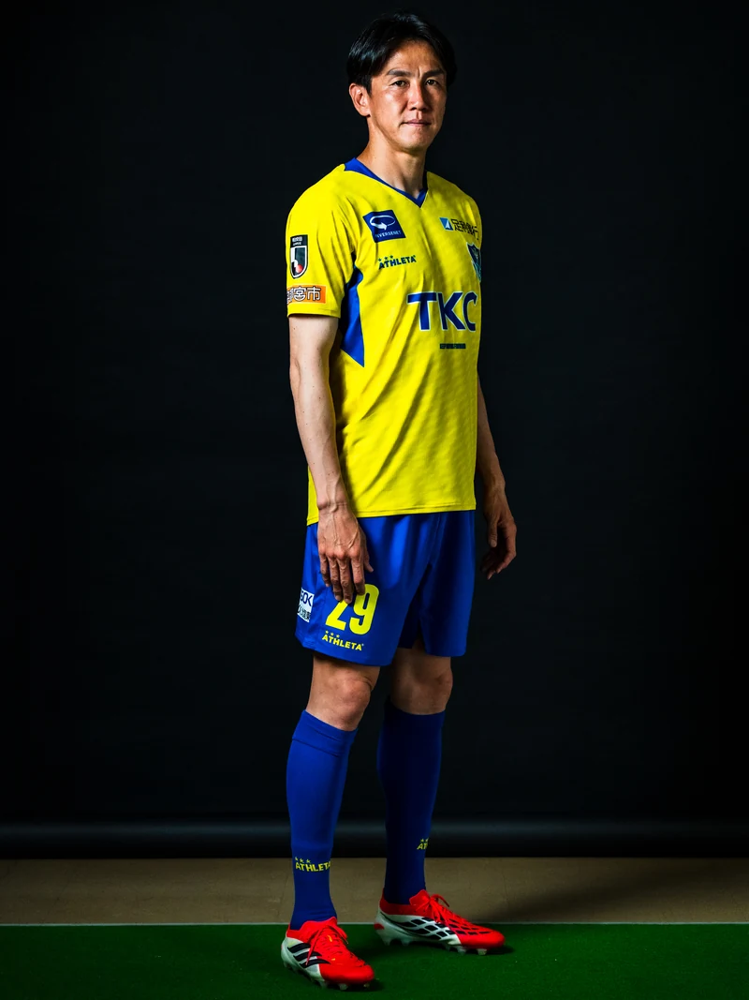
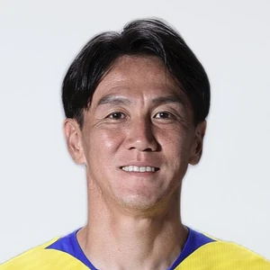

29FWフォワード
矢野 貴章
やの きしょう
YANO Kisho
きしょう
PROFILEプロフィール
- 生年月日
- 1984年4月5日
- 出身
- 静岡県
- 身長
- 187cm
- 体重
- 78kg
- 前所属
- アルビレックス新潟
- 在籍
- 7年目
※ 以下のQ&Aはレイアウト確認用のダミーです（本番前に差し替え）
CHOICEどっち派？
- 朝型/夜型
- 海/山
- 犬/猫
- ごはん/パン
- 辛党/甘党
- インドア/アウトドア
- 映画館/家で観る
- 大人数/少人数
- きのこの山/たけのこの里
- お風呂は熱め/ぬるめ

Q&AQ. 自分の性格をひとことで言うと？
マイペース
Q. アピールポイント（サッカー面）
諦めない姿勢
Q. アピールポイント（サッカー以外）
ポジティブ
Q. チャームポイント
年齢
Q. サッカー面での今シーズンの目標
昇格
MEMORIESあの頃のこと
Q. 学生時代、いちばん苦手だった教科は？
古文。最後まで何を言っているのか分からなかった。
Q. 給食でいちばん好きだったメニューは？
揚げパン。おかわりじゃんけんだけは負けたくなかった。
Q. 子どもの頃の、いちばんの宝物は？
兄のお下がりのスパイク。ボロボロで足も合っていなかったのに、捨てられなかった。
Q. 人生でいちばん親に怒られたことは？
小4の夏、夏休みの宿題を最終日まで1ページもやっていなくて、母に泣かれた。怒鳴られるより、あれがいちばん効いた。
Q. 学生時代のあだ名は？ その由来は？
「きしょー」。ひねりが一切ないまま、いまも変わっていない。
DAILYふだんのこと
Q. 遠征バッグに必ず入れているものは？
使い慣れた枕
Q. スマホのホーム画面、いちばん左上のアプリは？
天気アプリ
Q. 冷蔵庫にいつも入っているものは？
炭酸水。箱で買っている。
Q. 朝起きて、最初にすることは？
カーテンを開ける
Q. カラオケの十八番は？
ゆず「栄光の架橋」
Q. 買い物でいちばんお金を使うジャンルは？
子どもの服
CAREERサッカー人生
Q. サッカーを始めた日のこと、覚えていますか？
覚えている。近所の空き地で、年上の子たちに混ぜてもらったのが最初だった。ボールにまともに触れないまま日が暮れて、それでも次の日も同じ場所に行った。うまくなりたいというより、あの輪に入りたかったのだと思う。
Q. プロを諦めかけた瞬間はありましたか？ そこで何がありましたか？
一度ある。長くケガで離れていた時期に、自分だけ時間が止まっているように感じた。結局、毎日同じ時間にグラウンドへ行くことだけを続けた。戻れたのは、うまいことを考えるのをやめたからだと思っている。
Q. 人生でいちばん悔しかった試合は？
勝てば結果が変わっていた最終節。終了間際の場面がいまも頭に残っていて、たぶん一生忘れない。
TOCHIGI栃木とチーム
Q. 栃木に来ていちばん驚いたことは？
空が広いこと。あと、道路がすいていて運転しやすい。
Q. 栃木で食べていちばんうまかったものは？
餃子。店ごとに全然ちがうのが面白い。
Q. チームでいちばんおもしろい選手は？ その理由は？
27 永井 大士。真顔で変なことを言うので、毎回こっちが持っていかれる。
MESSAGEサポーターの皆さんへ
昇格をつかみ取るために、一丸となって頑張りましょう！